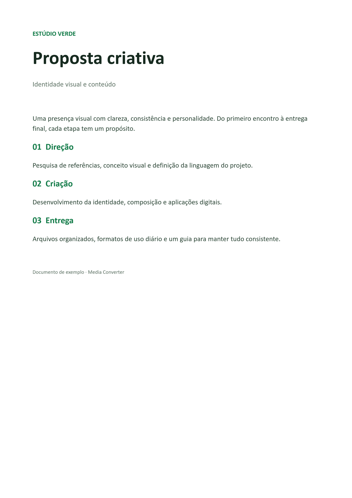

Documento para compartilhar
Da proposta ao PDF.
Um DOCX pronto para enviar, com a apresentação preservada. Este exemplo foi convertido no Media Converter usando o Word no Windows.
DOCXPDF

proposta-criativa.pdfVídeo, áudio, imagem, documento, planilha, PDF e mais. Escolha o formato e receba uma cópia pronta, ao lado do original.
Gratuito e local. Windows, macOS e Linux.
Passe o mouse e escolha uma fatia. Nenhum arquivo é convertido nesta prévia.
No Windows, arraste um arquivo do Explorador e use o gesto configurado, ou abra a roda pelo atalho. Roda escura com fatias arredondadas, centro preto e verde discreto. A roda se divide pela quantidade de opções, sem espaços vazios.
Um DOCX pronto para enviar, com a apresentação preservada. Este exemplo foi convertido no Media Converter usando o Word no Windows.

proposta-criativa.pdfO ícone do projeto convertido de PNG para WebP. Compare o original e a cópia, ambos disponíveis para baixar.
Defina o trecho, a velocidade, a resolução e o volume. Extraia áudio ou salve vídeo sem som.
Una documentos, selecione a ordem das páginas e gire. Exporte páginas em PNG ou JPG no Windows.
Arquivos novos viram cópias em Convertidos. Compacte em ZIP, 7Z ou TAR e extraia formatos como RAR e ISO.
01Vídeo, áudio, imagem e documentos
02Roda sem limite de opções
03O original nunca é alterado
De um único arquivo a uma pasta inteira, cada conversão começa com escolhas claras e termina com uma cópia nova.
Vídeo para MP4, HEVC, WebM, ProRes ou GIF. Áudio para MP3, WAV, FLAC e mais. Imagem para PNG, JPG, WebP, AVIF e ICO.
No Windows, documentos usam o Office instalado. No Mac e Linux, usam o LibreOffice. União e organização de PDFs funcionam localmente, sem Office.
Escolha uma pasta, defina o destino de cada tipo e converta tudo. O progresso é real, arquivo por arquivo, com cancelamento.
Qualidade Máxima, Equilibrada ou Compacta, com limite opcional de resolução. O Studio permite definir tamanho e enquadramento.
MP4 H.264 · H.265 · WebM VP9 · ProRes 422 HQ · DNxHR HQ · MKV/MP4 sem recompressão · GIF · quadro PNG
GPU NVIDIA usada automaticamente em H.264 e H.265, quando disponível.MP3 · WAV 24-bit · FLAC · M4A · OGG · Opus · AIFF · ALAC
Também extrai o áudio de qualquer vídeo.PNG · JPG · WebP · AVIF · TIFF · BMP · GIF · ICO · PDF
Lê também SVG, PSD, EXR e, com a extensão HEIF do Windows, HEIC.PDF · DOCX · ODT · RTF · TXT · HTML · XLSX · CSV · ODS · PPTX · ODP · slides em PNG · JSON · TSV · SRT · VTT · ASS · ZIP
Documentos usam Office no Windows e LibreOffice no Mac/Linux. Markdown e texto viram PDF e HTML sem eles.A roda aparece no cursor com os formatos do tipo de arquivo. Um clique converte e salva a cópia ao lado do original.
“Converter com Media Converter” no menu do Explorador. No Windows 11, fica em “Mostrar mais opções”.
Alt + Shift + C com arquivos selecionados no Explorador, na área de trabalho ou copiados com Ctrl+C.
Botão direito → Enviar para → Media Converter. Ideal para muitos arquivos de uma vez.
Digite o número e pressione Enter para escolher. Setas navegam, Tab alterna as rodas e Esc cancela. Sem limite de opções: cada opção ocupa uma fatia, sem espaços vazios.
Os motores de mídia já vêm incluídos. Não precisa de Python, Node.js nem configurar o PATH.
Painel, Studio e roda rápida. Integração com o Explorador e Office instalado para documentos.
Baixar para WindowsInstalador EXE · Windows 10 e 11 · por usuárioConversão local de mídia, PDF e arquivos. Documentos usam o LibreOffice instalado no Mac.
DMG · prévia sem assinatura Developer IDAppImage portátil ou DEB para Ubuntu e derivados. LibreOffice opcional para documentos.
AppImage requer FUSE · alternativa DEBv2.6.1 · FFmpeg e FFprobe incluídos · Notas e todos os arquivos. As integrações com o Explorador e o gesto de sistema são exclusivos do Windows. Nas outras plataformas, use o painel ou selecione arquivos na roda.
Arraste para o painel, escolha uma pasta inteira ou use a roda no Explorador.
Cada tipo de arquivo mostra só os formatos possíveis, com a qualidade que você preferir.
Ela fica ao lado do original, ou na pasta que você escolheu. Se o nome existir, ganha “(convertido)”.
Nunca. A conversão grava uma cópia temporária e só dá o nome final quando termina inteira. Se você cancelar, a cópia incompleta é apagada.
No Windows, documentos usam Word, Excel ou PowerPoint instalados. No macOS e Linux, usam LibreOffice. Mídia e organização de PDFs funcionam sem eles; PDF para imagens via WinRT é exclusivo do Windows.
Não. Converter para WAV, FLAC ou ProRes facilita a edição, mas não recupera detalhes que o arquivo de origem já perdeu.
Não. Tudo roda no seu computador. O aplicativo não usa servidor de conversão.
Outro programa pode estar usando Alt+Shift+C. Na aba Roda rápida, escolha outro atalho; o status mostra se ele foi registrado.
Também é de Alex Ascencio: Media Downloader, para baixar a mídia antes de converter.